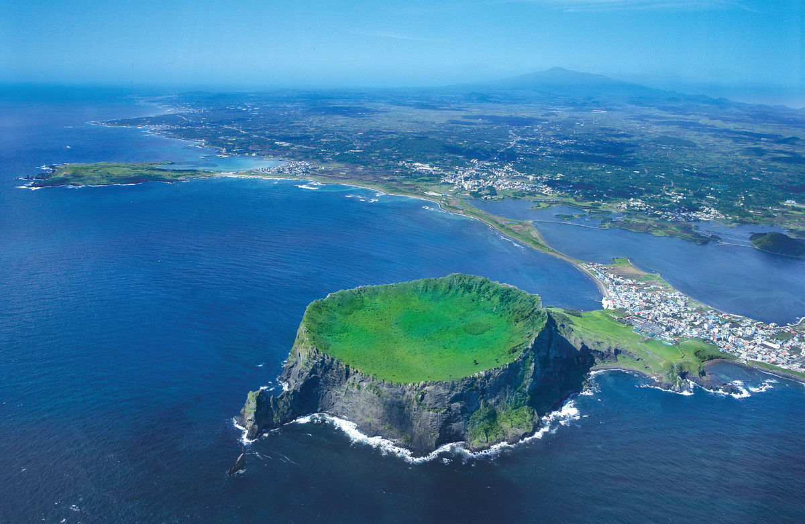

Would you like to know about Jeju Island in South Korea?

Jeju-do, Korea’s largest island, has long been the country’s favourite domestic holiday destination thanks to its beautiful beaches, lush countryside and seaside hotels designed for rest and relaxation.
Jeju-do, Jeju Insland or Jeju Province is the only special self-governing province of South Korea, situated on and coterminous with the country's largest island. Jeju-do lies in the Korea Strait, southwest of Jeollanam-do Province. Its capital is the city of Jeju. The island contains the Natural World Heritage Site entitled Jeju Volcanic Island and Lava Tubes.